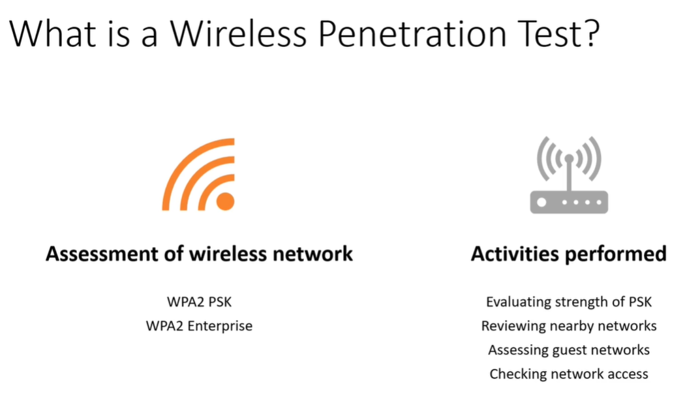

What is a Wireless Penetration Tester ?_?
Essentially it is the assessment of a wireless network.
But there are 2 types of Network:
WPA2 PSK (i.e. HOME)
WPA2 Enterprise
get familiar with WPA2 Enterprise attacks as it is very difficult to setup up the lab as it is coslty and not budget friendly.
If we are going against the PSK will be going to evaluate the strength of that key as we will be capturing the handsake and this handshake is going to allow us to take the file offline and will try to crack it.